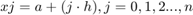
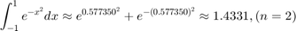
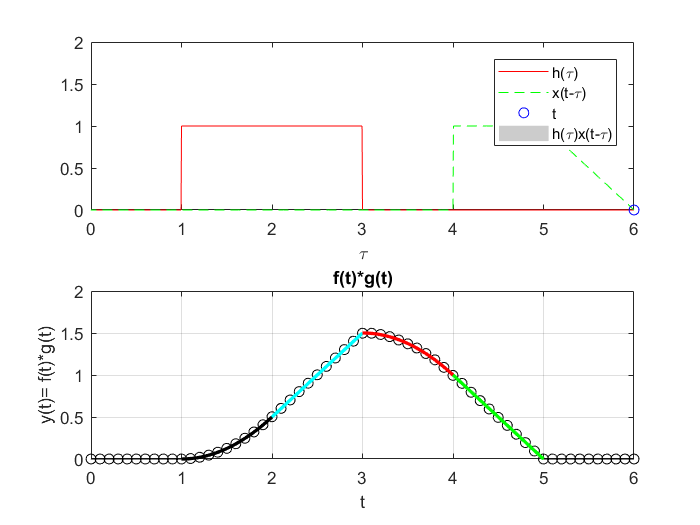
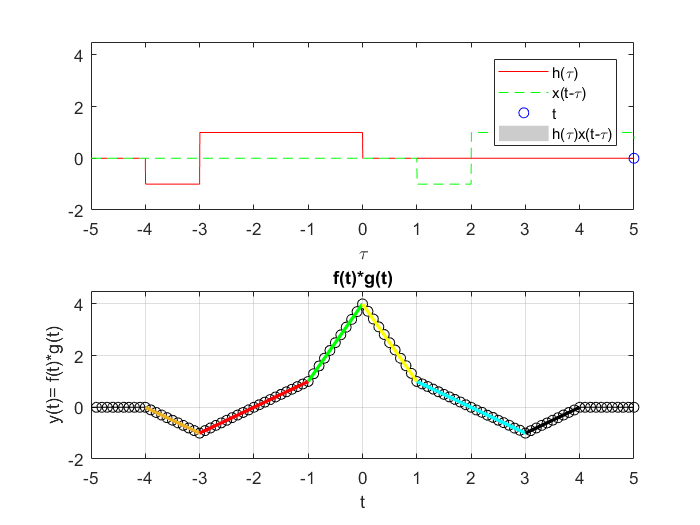

Practica 4 Convolucion y correlacion
Grupo: 2TV2
Materia: Señales y Sistemas
Alumnos:
Espinosa Salas Emmanuel
Sandoval Palma Miguel Angel
Villegas Fraga Hamlet Ismael
Profesor: Dr. Rafael Martínez Martínez
Contents
Objetivos
- Conocer métodos básicos de integración numérica
- Simular convoluciones y correlaciones de señales continuas
- Manipulación de instrucciones en MATLAB
Introducción
El análisis numérico es una rama de las matemáticas que mediante el uso de algoritmos iterativos, obtiene soluciones numéricas a problemas en los cuales la matemática analítica resulta poco eficiente y en consecuencia no puede ofrecer una solución.
Por lo general los métodos numéricos se componen de un número de pasos finitos que se ejecutan de manera lógica, mejorando aproximaciones iniciales a cierta cantidad, tal como la raíz de una ecuación, hasta que se cumple con cierta cota de error.
Regla del Trapecio
En análisis numérico, la regla del trapecio es un método de integración numérica, el método se basa en aproximar el valor de la integral de f(x) por el de la función lineal que pasa a través de los puntos (a,f(a)) y (b,f(b)). La integral de ésta es igual al área del trapecio bajo la gráfica de la función lineal. La aproximación del área se calcula como:
Regla de Simpson 1/3
Este método consiste en la aproximación del cálculo del área plana bajo una curva utilizando trapecios curvilíneos a partir de una interpolación con una función cuadrática. Requiere el conocimiento de tres puntos equiespaciados: los extremos y un punto central. Aplicando esta expresión utilizando mayor cantidad de puntos intermedios, puede definirse la variante compuesta del método para el cual se utilizan N puntos que corresponden a n = N-1 subintervalos. Este caso requiere que la cantidad de subintervalos sean pares. Por lo tanto, se define un valor h que corresponde a el ancho del subintervalo o el paso que hay entre puntos. Se calcula como h = (b-1)/n. La aproximación del área se puede calcular
Regla de Simpson 3/8
Este método es similar a la regla de 1/3 de Simpson, con la excepción que se determina el área bajo una parábola de tercer grado que conecta 4 puntos sobre una curva dada. Igual que el caso de Simpson 1/3, se utiliza un polinomio de interpolación de Lagrange, y usando el método de integración por partes se llega a la siguiente fórmula:
Cuadratura de Gauss
Es una aproximación de una integral definida de una función que selecciona los puntos de la evaluación de manera óptima y no en una forma igualmente espaciada, construída para dar el resultado de un polinomio de grado 2n-1 o menos, lo cuál da origen a la siguiente fórmula:
Regla compuesta del trapecio
Donde: n = número de subintervalos, h = , , j = 0,1,2...,n

Regla compuesta de Simpson
Donde: n = número par de subintervalos, $ , 
Cuadratura gaussiana
Donde: ,

Ejercicio 1
Por el metodo analitico nosotros sabemos que el producto de la convolucion

Ejercicio 2
Por el metodo analitico nosotros sabemos que el producto de la convolucion


Ejercicio 3
Para el PR06 reporte la grafica de la simulación númerica de la correlación y compare con el resultado análitico que obtuvo para el problema e), esto es, su práctica tendrá que incluir una llamada a la funciónn convconm y posteriormente se tendrá que mostrar (mediante el Publish) la gráfica tanto de las señales involucradas como el resultado de su correlación, y en esta última graficara su resultado analitico, se tendrá que incluir el resultado analitico.

El resultado analitico nos indica que la convolucion queda como se muestra en siguiente expresion

Ejercicio 4
Para el PR06 reporte la grafica de la simulación númerica de la correlación y compare con el resultado análitico que obtuvo para el problema f), esto es, su práctica tendrá que incluir una llamada a la función convconm y posteriormente se tendrá que mostrar (mediante el Publish) la gráfica tanto de las señales involucradas como el resultado de su correlación, y en esta última graficara su resultado analitico, se tendrá que incluir el resultado analitico.


El resultado analitico de
Referencias
- Canal de Mates y Así enlace
- Documentacion de MATLAB